A kiosk OS that does one thing on the screen.
pikiosk boots a Raspberry Pi straight into one fullscreen native app. No login prompt, no desktop, a read-only root, and a touchscreen UI in Rust that draws liquid glass straight to the display.
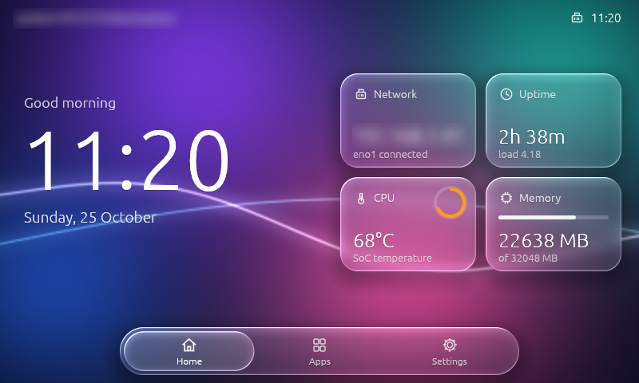
Built to be switched on and left alone
Read-only by design
The OS partitions are never written. Pulling the power is safe. Logs live in RAM, and everything generated at boot goes to /run.
Liquid-glass UI
kiosk-ui is Rust + egui. Glass panels refract, frost and light the wallpaper with a custom GLES 2 shader, through DRM/KMS with no X11 or Wayland.
One image per board
Buildroot 2026.08 images for the Raspberry Pi 3B, 4 and 5 (64-bit), flashed with Raspberry Pi Imager.
Signed app store
Install and update apps from a TUF-signed store behind an admin PIN. A bad update rolls itself back. Off until you turn it on.
Self-healing
Hardware watchdog, app auto-restart after 2 s, reboot on a crash loop, kernel panic auto-reboot.
Configure on the card
Edit one file, kiosk.conf, on the FAT partition: hostname, WiFi, static IP, timezone, NTP, which app runs. No rebuild.
| Part | What it is |
|---|---|
| Kernel | Raspberry Pi kernel 6.12 (arm64), KMS graphics |
| Init | systemd, read-only root filesystem |
| Graphics | DRM/KMS + Mesa (VC4 on the Pi 3B; VC4 and V3D on the Pi 4 and 5): EGL, GLES2, GBM |
| Network | Ethernet and onboard WiFi (DHCP or static), DNS, NTP, mDNS (kiosk.local) |
| Maintenance | SSH with public keys only, and off unless you provide a key |
| Display | Waveshare 5inch HDMI LCD (B): 800×480, USB touch, calibrated on the device |
Three pages, one swipe apart
Switch with the floating tab bar, a horizontal swipe or the arrow keys. A compact layout is drawn for 800×480, a roomier one from 1280×720.
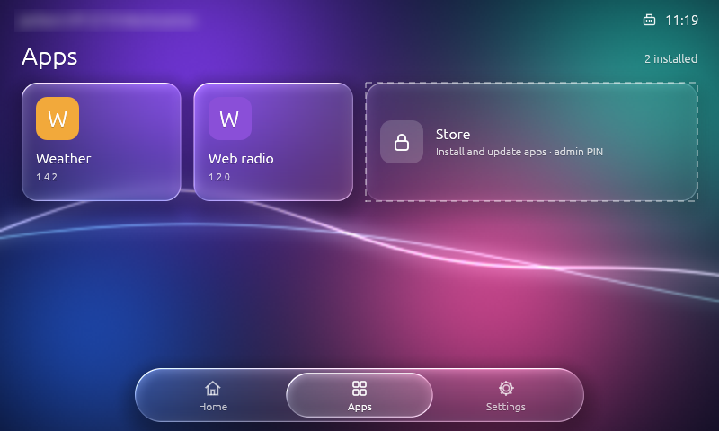
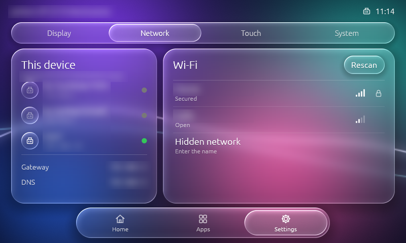
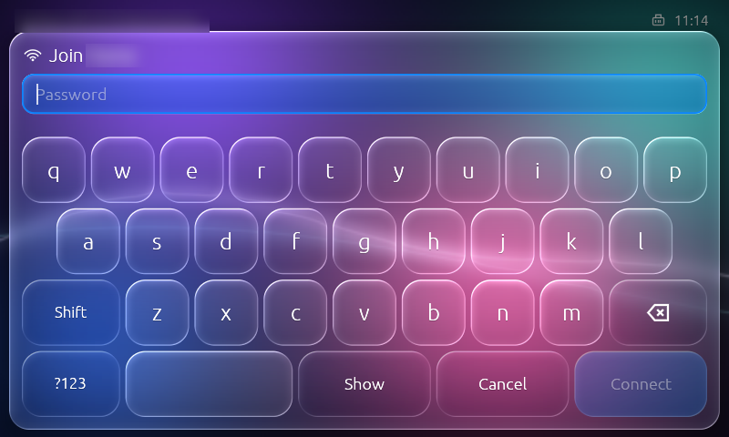
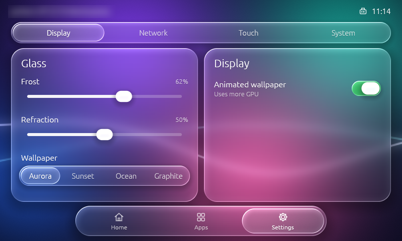
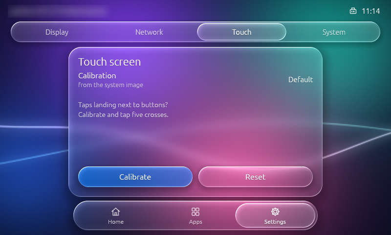
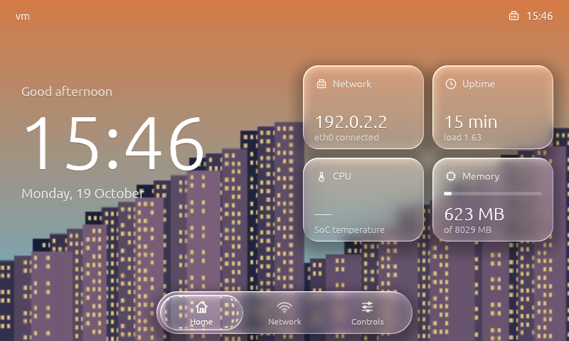
wallpaper.jpg to the boot partition.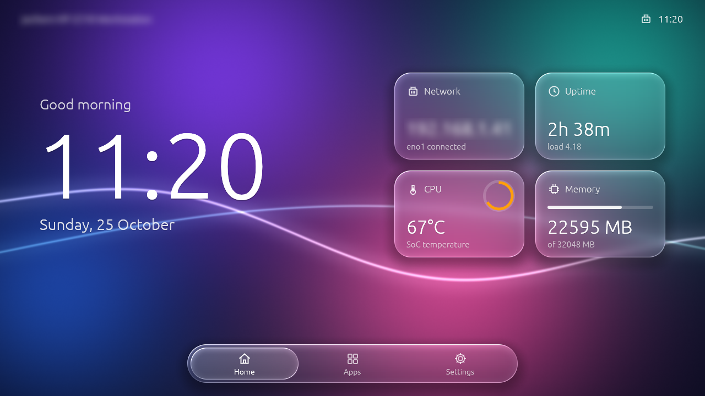
Touch calibration that cannot lock you out
Settings → Calibrate shows five crosses. kiosk-ui fits a calibration matrix to your taps, then shows a check screen. Keep saves it; without Keep, the old calibration returns after 15 s. It is stored in /data/app and survives re-flashing the root filesystem.
Tuned for a resistive panel
A fingertip wobbles up to 13 px on this panel, so a tap may move 20 px and still count. The animated wallpaper is capped at 30 fps on the Pi 3B; with animation off the screen redraws once a second.
Pick your board
Each release has one compressed image per board and the SDK for building apps. Raspberry Pi Imager flashes the image directly (“Use custom”).
All files, checksums and the app SDK are on the latest release. The Pi 4 and 5 need a micro-HDMI adapter cable for the Waveshare panel.
From download to kiosk in five minutes
Flash the image
Open Raspberry Pi Imager, choose “Use custom”, pick the .img.xz, write it to an SD card. The data partition grows to fill the card on first boot.
Edit kiosk.conf
The card’s FAT partition KIOSKBOOT shows up on your computer. Set hostname, timezone and WiFi, or leave WiFi empty and add networks on the touchscreen in Settings › Network. Changes apply on the next boot.
# KIOSKBOOT/kiosk.conf
HOSTNAME=kiosk
TIMEZONE=Europe/Amsterdam
WIFI_COUNTRY=NL
WIFI_SSID=MyNetwork
WIFI_PSK=correct-horse-batteryBoot it
Put the card in the Pi and power it on. kiosk-ui appears on the display. Calibrate the touch panel under Settings if the corners are hard to hit.
Optional: SSH
Put your public key in a file named authorized_keys on the same partition. Without it, SSH does not run.
ssh root@kiosk.local journalctl -u kiosk -f
A signed app store for a kiosk
Apps are .kpkg packages built on kiosk-kit, the crate kiosk-ui itself uses for display, touch and glass. One app owns the screen at a time. Hold the top-right corner for 3 seconds to leave an app, even a hung one.
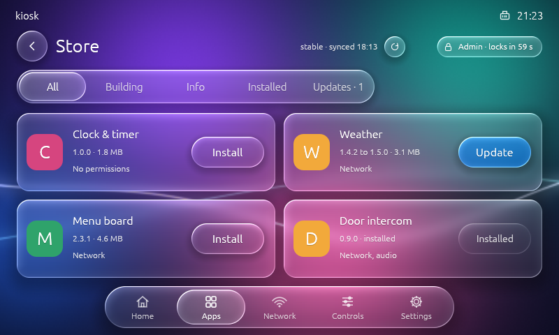
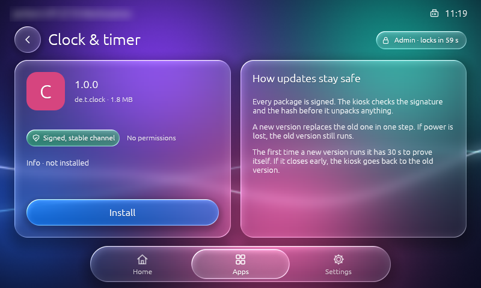
Admin PIN
Installing, updating and removing need the PIN from STORE_PIN (4 to 8 digits), entered on a glass keypad. kioskd checks it; the UI only holds a token that ends 60 s after the last touch. Three wrong PINs lock it, and pulling the power does not reset that.
Atomic updates
A new version replaces the old in one step. Pull the power mid-install and the previous version still runs. App data in /data/store/data/<id> survives updates and re-flashing.
Offline once installed
Installed apps never need the network. The store is checked for updates only after NTP has set the clock, because signatures expire.
Health gate and rollback
current, the old one previous.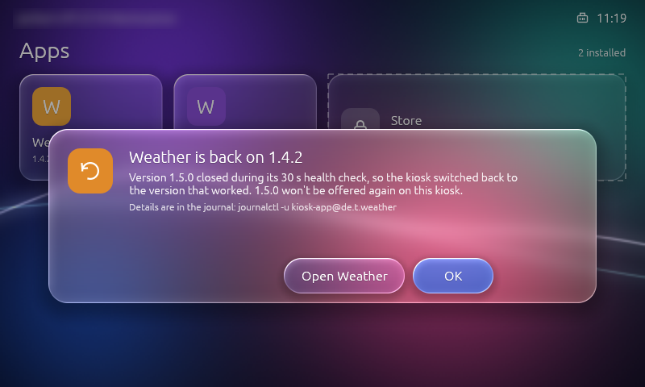
Turn the store on
Both ways are off by default: with an empty STORE_URL and no STORE_PIN, the Store tile is hidden and nobody can install anything.
# KIOSKBOOT/kiosk.conf
STORE_URL=https://pierrejochem.github.io/pikiosk-apps
STORE_CHANNEL=stable
STORE_PIN=482913| Key | Default | Meaning |
|---|---|---|
STORE_URL | empty (off) | Base URL of the store. The board reads <url>/<channel>/metadata and /targets. |
STORE_CHANNEL | stable | stable or beta. |
STORE_PIN | empty | 4 to 8 digits. Without it nobody is admin. |
STORE_PIN_LOCKOUT | 300 | Seconds every PIN is refused after 3 wrong ones. |
STORE_ALLOW_UNSIGNED | no | Install unsigned .kpkg files from /boot/apps. For development only. |
KIOSK_HOME_GESTURE | yes | The 3 s top-right hold that leaves an app. |
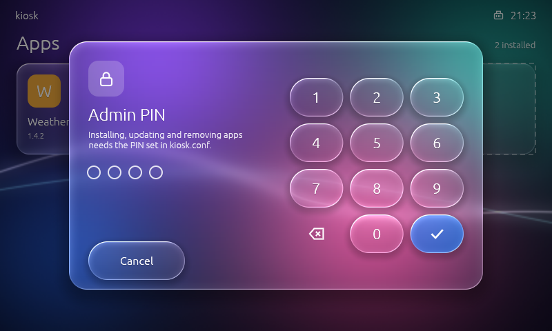
Publish your own app
An app is a Rust crate that implements kiosk_kit::App and calls kiosk_kit::run, plus a manifest.toml and a 128×128 PNG icon. Start from apps/hello in the pikiosk-apps repository, which holds the publish workflow and the key ceremony. Each release attaches an SDK, so one binary runs on all three boards.
# manifest.toml id = "de.example.hello" version = "1.0.0" name = "Hello" entry = "bin/hello" icon = "assets/icon.png" category = "Demo" boards = ["rpi3", "rpi4", "rpi5"] # build and check the package cargo run --release -p kpkg -- build my-app/ -o my-app.kpkg cargo run --release -p kpkg -- inspect my-app.kpkg # publish: tag the app, the workflow signs it into the beta channel git tag hello-v1.0.0 && git push origin hello-v1.0.0
What protects the device, and where it stops
Signed with TUF
Every package is checked for signature, expiry, rollback and hash. The trust anchor root.json is baked into the image, so changing it means a new image. A copy of an old store, or a clock turned back, is refused.
No logins
No login prompt on the screen, the serial port or anywhere else. SSH takes public keys only and is off without an authorized_keys file.
Apps run unprivileged
Apps run as the kiosk account in a systemd sandbox with a read-only /data view, no access to /boot or the kioskd socket, and task, CPU and OOM limits. Package environment variables that could load code into root commands are refused.
kiosk.conf. The design and the 0.2.0 security review are written up in docs/app-store.md.Docker on macOS or Linux
The first build takes 1 to 1.5 hours. After that a rebuild with unchanged system code takes about a minute, because the toolchain, kernel and compiler output are cached.
git clone https://github.com/pierrejochem/pikiosk cd pikiosk ./build.sh # Pi 3B -> out/sdcard.img BOARD=rpi4 ./build.sh # Pi 4 -> out/sdcard-rpi4.img BOARD=rpi5 ./build.sh # Pi 5 -> out/sdcard-rpi5.img ./build.sh app # only kiosk-ui -> out/kiosk-ui
Try a changed UI without flashing
Build the app, copy it to /data, and point kiosk.conf at it.
./build.sh app
scp out/kiosk-ui root@kiosk.local:/data/app/
# kiosk.conf: APP=/data/app/kiosk-uiRun a different app
Any aarch64 binary can be the kiosk app. Qt 6, SDL2 and flutter-pi come as build fragments.
./build.sh with qt6 ./build.sh with sdl2 ./build.sh with flutter
Try the UI on your computer
tools/emulate.sh opens kiosk-ui in a window the size of the 5″ panel (800×480, or pass 1280x720), with the real kioskd behind it. The WiFi list, the on-screen keyboard, the admin PIN and the brightness slider all work with the mouse. Only wpa_cli is replaced, by a stand-in with made-up networks, so nothing on your own network is touched. The admin PIN is 1234, and the password wrongwrong is always refused.
tools/emulate.sh # 800×480, the 5″ touch panel tools/emulate.sh 1280x720 # the roomier layout
Only the emulator needs these; the SD card image does not. On Linux it needs a display and a few development packages. On Ubuntu:
sudo apt install -y pkg-config libudev-dev libinput-dev libgbm-dev libdrm-dev libegl-dev
The SD card
| Partition | Type | Size | Holds |
|---|---|---|---|
| p1 · KIOSKBOOT | FAT32 | 64 MB | Firmware, kernel, kiosk.conf, authorized_keys. Mounted read-only on /boot. |
| p2 · kioskroot | ext4 | 256 MB | The OS. Mounted read-only on /. |
| p3 · kioskdata | ext4 | the rest | SSH host keys, /data/app, installed apps. Mounted read-write on /data. |
The source
| Crate | Role |
|---|---|
kiosk-kit | Display, touch and glass widgets as a library. What apps build on. |
kiosk-ui | The kiosk app: the pages, the Apps page and the Store. |
kioskd | Root daemon: launches apps, Home gesture, installs, PIN, health gate. |
kpkg | The .kpkg format and tool: build, inspect, verify, catalog. |
Notes and limits
No real-time clock
The Pi 3B and 4 have no RTC, so the clock is right only after an NTP sync. The store checks for updates only after that. The Pi 5 has an RTC with an optional battery.
WiFi
WPA3-only networks do not work: the Pi 3B’s WiFi chip does not support SAE. WPA2 and WPA2/WPA3 mixed mode work.
Pi 4 and Pi 5
Their images are built by CI and have not been run on hardware yet. The Pi 3B is the tested board.
Glass and layers
Glass refracts the wallpaper, not other UI elements underneath it. egui has no backdrop capture.